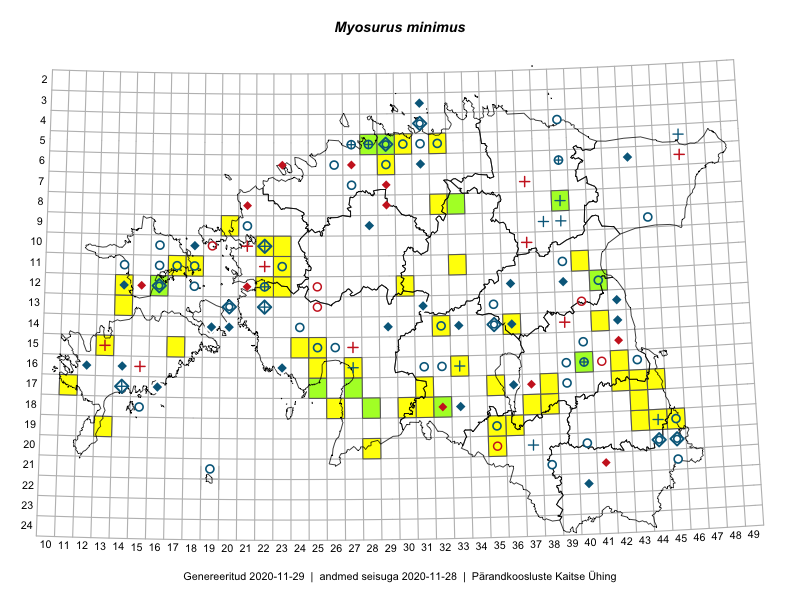

Myosurus minimus
Uuendatud: 2016-12-01
Kaardile koondatud taksonid: Myosurus minimus L.

Kaart põhineb 64 kirjel, neist vaatlusi 60 ja eksemplare 4.
Kuvatud viited 20 esimesele andmebaasikirjele, ülejäänud PlutoFis
- Rein Kalamees: 2015-06-08: 05-32: ala
- Peedu Saar, Liina Oja: 2015-05-21: 16-25: ala
- Peedu Saar, Liina Oja: 2015-05-20: 18-28: ala
- Peedu Saar, Liina Oja: 2015-05-20: 18-26: ala
- Peedu Saar, Toomas Kukk: 2015-05-28: 11-17: GPS punkt
- Toomas Kukk, Raivo Kalle: 2015-05-12: 11-40: ala
- Toomas Kukk, Raivo Kalle: 2015-05-12: 11-40: GPS punkt
- Peedu Saar: 2015-08-04: 14-36: ala
- Ott Luuk, Hannes Pehlak: 2015-06-12: 20-35: ala
- Ott Luuk, Hannes Pehlak: 2015-06-12: 19-35: ala
- Ott Luuk, Hannes Pehlak: 2015-06-11: 17-31: ala
- Ott Luuk, Hannes Pehlak: 2015-06-09: 12-30: ala
- Ott Luuk, Hannes Pehlak: 2015-06-08: 11-33: ala
- Ott Luuk, Indrek Tammekänd: 2015-05-22: 18-31: ala
- Peedu Saar: 2015-05-16: 16-42: ala
- Indrek Tammekänd, Liisa Rennel, Agu Leivits, Hannes Pehlak, Irja Tammekänd: 2015-04-27: 15-24: ala
- Jana-Maria Habicht, Ester Valdvee: 2015-05-29: 08-33: ala
- Ott Luuk, Eerik Leibak: 2015-05-21: 17-25: ala
- Ott Luuk, Eerik Leibak: 2015-05-21: 17-25: GPS punkt
- Maria Abakumova, Helle Mäemets: 2015-07-01: 14-32: ala